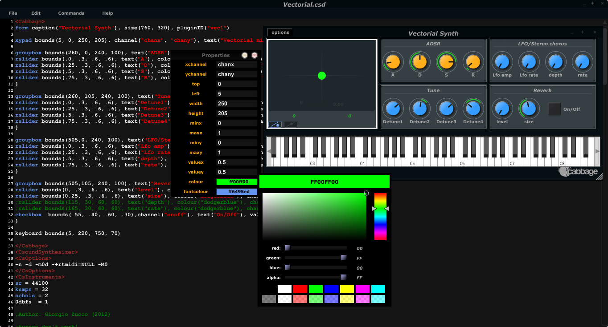

The Cabbage Standalone Host
While any text editor can be used to code Cabbage instruments, it's fair to say that most development and prototyping will be done with the main Cabbage host and source code editor. The Cabbage standalone host is a single instrument host. It loads a Cabbage .csd file as a standalone plugin and comes with many features that make developing instruments that little bit easier. Provided below is a run down of the various options accessible from the 'Options' menu.

Open Cabbage Instrument
Use this command to open a cabbage instrument(unified Csound file with a dedicated
On OSX users can open .csd files contained within plugins. Just select a .vst file instead of a .csd file when opening. See the sections on exporting plugins for more information.
New Cabbage...
This command will help you create a new Cabbage instrument/effect. Cabbage instruments are synthesisers capable of creating sounds from scratch while effects process incoming audio. Effects can access the incoming audio by using the 'inch' or 'ins' opcodes. All effects have stereo inputs and stereo outputs. Instruments can access the incoming MIDI data in a host of different ways but the easiest is to pipe the MIDI data directly to instrument p-fields using the MIDI inter-op command line flags. Examples can be found in the examples folder.
View Source Editor
This command will launch the integrated text editor. The text editor will always contain the text which corresponds to the instrument that is currently open. Each time a file is saved in the editor(Ctrl+S), Cabbage will automatically recompile the underlying Csound instrument and update any changes that have been made to the instruments GUI. The editor also features a Csound message console that can prove useful when debugging instruments.
Audio Settings
Clicking on the audio settings command will open the audio settings window. Here you can choose your audio/MIDI input/output devices. You can also select the sampling rate and audio buffer sizes. Small buffer sizes will reduce latency but might cause some clicks in the audio.
Toggle edit-mode
Enabling edit-mode allows users to interact with GUI widgets. When in edit-mode, right clicking on the instrument's main area will display a context menu that will let you select a widget to insert on to your main form. When a widget is placed on screen the corresponding code will be inserted into your instrument's code. Any changes you make to the widget's size and position will automatically be updated in your code. Toggling edit-mode will also cause a property dialogue to appear. Any widget property can be set using this property dialogue window. In order to update your underlying source code with a newly edited property you must hit the 'Esc' key on your keyboard. If you do not, your updated property will not be passed to the instrument's source code and will therefore be discarded.
One should get into the habit of updating/saving their instruments when they make changes to its user interface. Instruments need to be recompiled for any changes to stick.
Export/Export as...
This command will export your Cabbage instrument as a plugin, that is, it will create a new plugin library file along with a copy of the Csound text file. Clicking 'synth' or 'effect' will cause Cabbage to create a plugin file in the same directory as the .csd file you are currently using. When 'exporting as...' Cabbage will prompt you to save your plugin in a set location, under a specific name. Once Cabbage has created the plugin it will make a copy of the current .csd file and locate it in the same folder as the plugin. This new .csd file will have the same name as the plugin and should ALWAYS be in the same directory as the plugin file.
You do not need to keep exporting instruments as plugins every time you modify them. You need only modify the associated .csd file. To simplify this task, Cabbage will automatically load the associated .csd file whenever you export as a plugin. On OSX Cabbage can open a plugin's .csd file directly be selecting the plugin when prompted to select a file to open.
Reload Instrument
This command will hard reset and rebuild the instrument from disk.
Batch Convert
Batch convert will let convert a selection of Cabbage .csd files, or an entire directory into plugins so you don't have to manually open and export each one.
Currently this feature is only available on Windows.
Preferences
The following preferences are available:
Always on Top
This command lets you toggle 'Always on top' mode. By default it is turned on. This means your Cabbage instrument will always appear on top of any other applications that are currently open.
Set Cabbage plant directory
This will open a directory browser dialog so that you can specify a set directory for saving Cabbage plant text files to. The default location for these files will be the user's home folder and should be left as is unless a unique location is absolutely required.
Set Csound manual directory
This will open a directory browser dialog so that you can specify the directory that contains Csound's index.html file. Once this directory is set you can launch context help for any Csound opcode that the text cursor is currently placed on.
Disable plugin export info
Checking this will disable the plugin export information that pops up on screen each time you export a plugin.
Use external editor
If you wish to use a different source code editor with Cabbage than the one provided, you can check this option. Whenever you save changes to the .csd file that Cabbage currently has open, Cabbage will automatically update according to the changes made. Although it's not as quick as the integrated editor, it does give you scope to use some feature rich source code editors with Cabbage.
Use native file dialogues
This option lets you set whether Cabbage will use its own File Chooser dialogues, or those provided by the operating system. Due to various issues with Linux file managers, Linux users may want to ensure that they use non-native dialogues. All file choosers that launch from within a Cabbage instrument will use non-native dialogues.